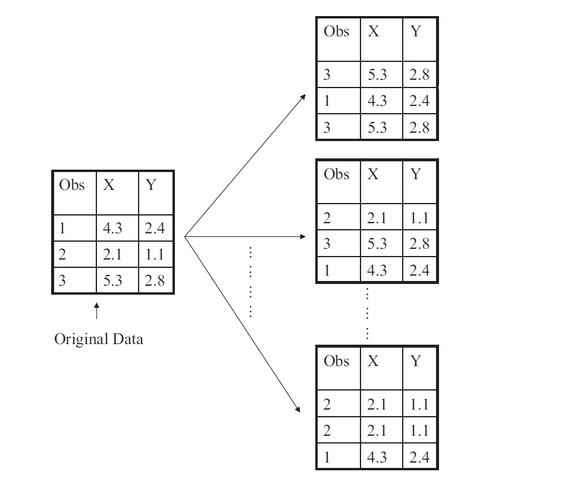
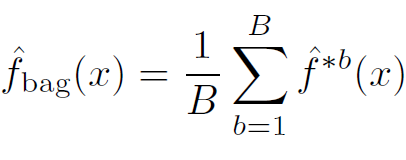
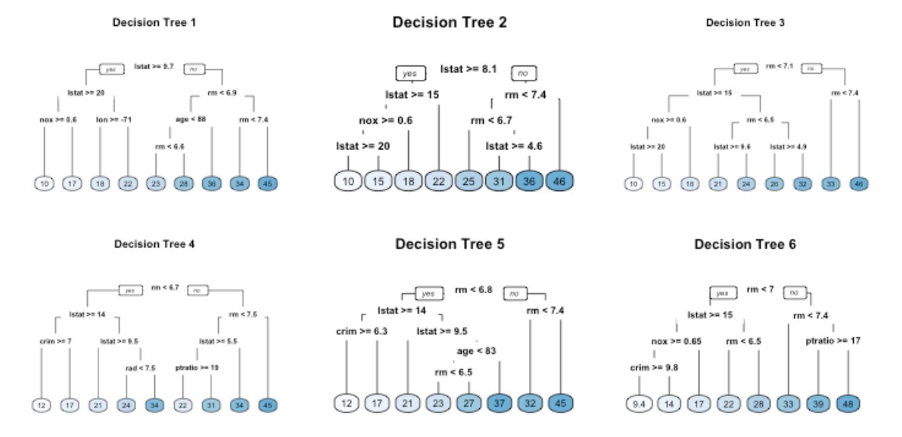
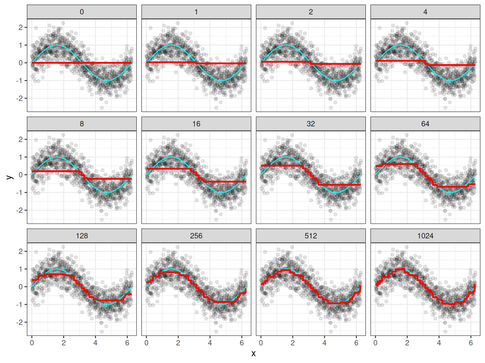

8 Tree-Based Ensemble Methods
8.1 Single Decision Trees
Advantages
Easy to explain.
Closely mirror human decision-making.
Can be displayed graphically, and are easily interpreted by non-experts.
Handle qualitative predictors without creating dummy variables. Does not require standardization of predictors.
Disadvantages
Do not have same level of prediction accuracy.
Can be very non-robust.
8.2 Ensemble Methods
Single regression or classification trees usually have poor predictive performance.
Ensemble Methods use a collection of multiple trees to improve the predictive performance at the cost of interpretability.
Bagging
Random Forests
Boosting
8.3 Bagging
Bootstrap aggregation or bagging is a general-purpose procedure for reducing the variance of a statistical learning method.
Idea: Build multiple trees and average their results.
Result: Given a set of \(n\) independent observations (random variables) \(Z_1, \ldots, Z_n\), each with variance \(\sigma^2\), the variance of the mean/average \(\bar{Z} = \displaystyle \dfrac{Z_1 + Z_2 + \cdots + Z_n}{n}\) of the observations is \(\sigma^2/n\).
In other words, averaging a set of observations reduces variance.
- In reality, we do not have multiple training datasets.
8.4 Bagging
Bootstrapping

8.5 Bagging
Take repeated bootstrap samples (say \(B\)) from the original (single) available dataset.
Build a tree on each bootstrap sample and obtain predictions \(\hat{f}^{*b}(x), \ b=1, 2, \ldots, B\).
Average all the predictions.

Individual trees are grown deep and are not pruned. They have high variance, but low bias.
For classification trees, take majority vote: the overall prediction is the most commonly occurring class among the \(B\) predictions.
8.6 Bagging: Disadvantages
Bagging improves the prediction accuracy for high variance (and low bias) models at the expense of interpretability and computational speed.
However, although the model building steps are independent, the trees in bagging are not completely independent of each other since all the original features are considered at every split of every tree. Rather, trees from different bootstrap samples typically have similar structure to each other (especially at the top of the tree) due to any underlying strong relationships.
This characteristic is known as tree correlation and prevents bagging from further reducing the variance of the individual models. Random forests extend and improve upon bagged decision trees by reducing this correlation and thereby improving the accuracy of the overall ensemble.
8.7 Bagging: Disadvantages
8.8 Bagging: Disadvantages
Tree Correlation in Bagging

8.9 Random Forests
Provide an improvement over bagged trees by reducing the variance further (by decorrelating) when we average the trees.
As in bagging, we build a number of decision trees on bootstrapped training samples.
For each tree, each time a split is considered, a random selection of \(m\) predictors is chosen (split candidates) from the full set of \(p\) predictors. The split is allowed to use only one of those \(m\) predictors. Note that in bagging, each split for each tree considers all \(p\) predictors as split candidates.
A fresh sample of \(m\) predictors is taken at each split. Typical default values are \(m = p/3\) (regression) and \(m = \sqrt{p}\) (classification) but this should be considered a tuning parameter, to be chosen by CV.
8.10 Gradient Boosting
Like bagging and random forests, boosting involves combining a large number of decision trees. However, the main idea of boosting is to add new models to the ensemble sequentially.
Each model in the process is a weak model, referred to as the base learner. The idea behind boosting is that each model in the sequence slightly improves upon the performance of the previous one, thereby learning slowly.
At each step of the process, we fit a tree to the residuals from the previous model, rather than the outcome \(Y\), as the response. The final model is a stagewise additive model of \(B\) individual trees.
\[\hat{f}(x) = \displaystyle \sum_{b=1}^{B} \lambda \ \hat{f}^b(x)\]
The process is called gradient boosting since it uses the gradient descent algorithm to minimize the loss function.
8.11 Gradient Boosting
8.12 Gradient Boosting

8.13 Gradient Boosting
The hyperparameters (to be tuned by CV) include:
Number of trees: Having too many trees can overfit the training data.
Shrinkage (\(\lambda\)): Determines the contribution of each tree to the final model and controls how quickly the algorithm learns.
Tree Depth: Controls the depth of the individual trees.
Minimum number of observations in terminal nodes: Also, controls the complexity of each tree.